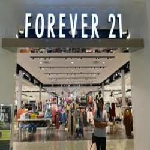
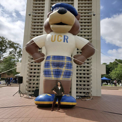
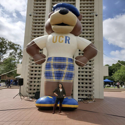

Mary Gonzalez
I a currently finishing my second year at the University of California Riverside and I am a senior. At a young age I have been learning multiple tehcniques that help me successful today and hopefully for the rest of my life. I started going to college at the age of 15 while still being enrolled in high school. Learning how to navigate and prosper while trying to balance out college and high school at the same time was difficult, but managable. Enduring challenging obstacles help me seek what I wanted to study for when I attended a univeristy. I found my interests in political sciece, so I joined student government at my community collge. I enjoyed doing community service because I was able to give back to my school community, but also I was able to give back to the community of Moreno Valley. I pushed myslef past my limits, and I was able to make it on the Dean's list, graduate high school, and graduate college with three accociate's dgrees with a distinction. Now thanks to all my hard work, I will be graduating at a univeristy at the age of 20.
As I have been navigating myself through a new academic atmosphere, I have learned even more. I enjoy exploring new ideas, learning new topics, pushing myself everyday to be more successful than I was yesterday. I have been taking very many political science classes that focus tremendously on politics here in the United States. I have become more knowledgeable in presidential elections, election participation, congressional elections, electoral systems, and many other aspects that shape politics and government in my country. I desire to apply my academic knowledgeable that I have acquired through the past years of my education.
Throughout my college education journey, I find work during the summer so that I can focus all my time to my studies. However, we live in a country that is competitive for jobs, so I have been working ever since I was 15. I have worked in retail for stores such as Kohl's, Forever 21, and Reyes Coca Cola. I first try to find work at school so that I could manage my school schedule and work schedule. I worked on campus helping other student with computer needs in my school's computer lab. At the time I was not very knowledgeable about computer, therefore I stared teaching myself the basic principles about computing. That added to my school and work load, but it was another thing I was willing to learn to improve my skills for work. This goes to prove my determination in order for me to succeed and help other students succeed as well. I enjoyed working under all my employers and give each job 100% effort. My wish is to work in government. Anywhere for local, state, or the federal government.
Experience
Receptionist
• Responsible for setting up tutoring appointments
• Help students with computing
Merchandiser
• Restock invetory on Sales Floor
• Communicate and work with 4 different managers from different stores
• Upsale brand
Education
UC Riverside
Moreno Valley Community College
Citrus Hill High School
Portfolio



